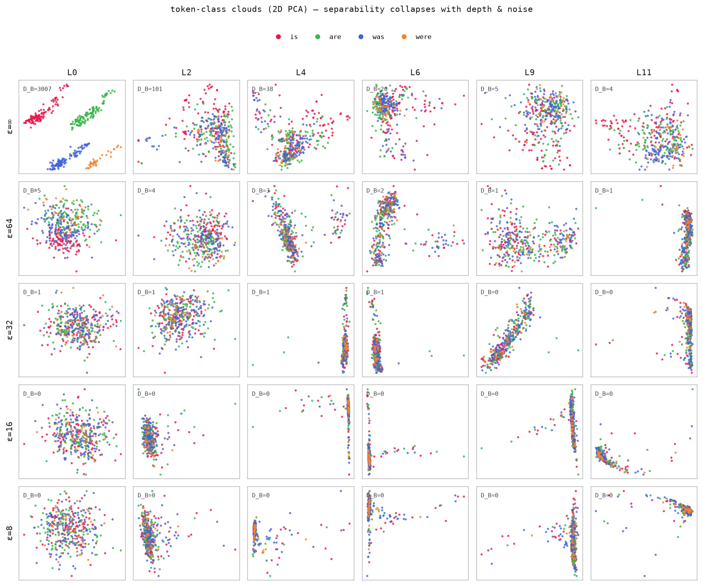
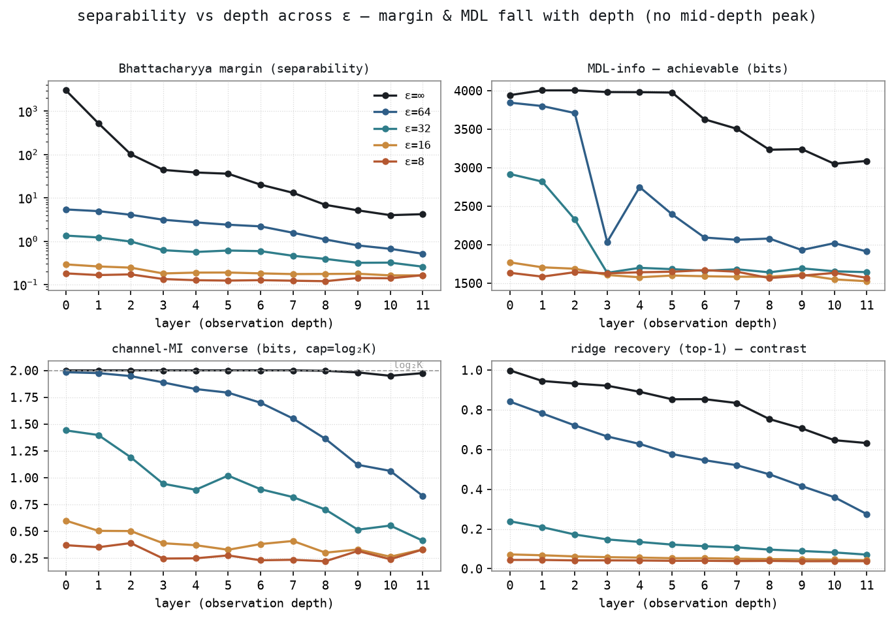

The cross-surface view of one defense: local differential privacy, a Gaussian mechanism applied to the input embedding. The page aggregates every surface measured under DP — the residual stream observed across depth, and the pooled embedding (Bayes-NN bounds, Vec2Text). On each surface an attack-independent probe (in bits) is paired with an attack, and the budget ε is swept. The residual finding: a regularized linear attack (ridge ≈ tuned-lens) is the single-position ceiling — a properly-trained non-linear decoder adds nothing at any depth — and token recovery falls monotonically with depth while the probes keep seeing the token. The genuine stronger-attack axis is not a deeper per-vector net but LM-prior / sequence-context decoding.
research report · 2026-06-25Differential privacy adds calibrated noise so the released object reveals little about any one input. This page measures, surface by surface, how much of the secret survives that noise and whether an attack-independent probe predicts how much an attacker recovers. The scheme is local DP: the data owner perturbs its own input embedding before releasing anything; the noise then propagates through whatever the deployment exposes.
One scheme, observed at different depths. The only DP mechanism here is the Gaussian mechanism on the input embedding e₀ ← clip(e₀,C); e′ = e₀ + N(0,σ²I), with σ = C·z/ε. The axis is the observation depth: at L0 the released object is the noised embedding itself; at depth L>0 it is that same noise reshaped through L transformer blocks. L0 and "propagated" are not two schemes — they are one scheme seen at two depths. Central DP (a trusted aggregator adding noise to outputs) is not covered yet.
Threat model — WEIGHTS-PUB, honest-but-curious. The adversary knows the weights, the embedding table, and the published DP parameters (C, σ), and can synthesize unlimited (noised-representation, token) training pairs at any ε. Every attack compared here uses only this, so comparisons between admissible attacks are fair.
Scope. Surfaces measured under DP: the residual stream (§04) and the pooled embedding (§05). Key/value-cache and permutation-table defenses use non-DP mechanisms (KV-Cloak, GELO, permutation cover, Stained Glass) and live on their own pages. The representation-space "at-layer noise" control — Gaussian noise injected directly at the observed layer, which is not a DP deployment — has been moved to a control note (research-wiki/experiments/representation-space-noise-control.md); it is the evidence that the depth decorrelation below is caused by propagation, not by noise magnitude.
| Term | Definition |
|---|---|
| local DP | The Gaussian mechanism on the input embedding: clip each row to L2 ≤ C, add N(0, σ²I) with σ = C·z/ε, z = √(2 ln(1.25/δ)). Smaller ε ⇒ more noise. Sensitivity C (add/remove-to-zero adjacency). |
| observation depth | Which layer's residual the adversary sees. L0 = the noised embedding itself; L>0 = that noise propagated through L blocks. The secret is the token id behind the released vector. |
| ridge (linear attack) | Closed-form linear map observation → embedding, then nearest token over the candidate pool. The information-inefficient baseline; self-generates noised training pairs. |
| decoder (non-linear attack) | A gated GELU MLP correction on top of a frozen ridge-warm-started linear path (ReZero init — the gate starts at 0 but keeps a live gradient), early-stopped on a held-out split. On this single-position surface the branch trains but never beats ridge — tied at shallow layers, slightly worse at deep+noisy ones (the non-linear correction overfits the vocab-disjoint recovery test). |
| CLUB | Variational MI upper bound I(rep;token) in bits. Attack-independent. |
| V_cap | Capacity-matched predictive V-information in bits, read as a bounded token-identity reader that never touches the embedding table. Attack-independent. |
| V_cap perplexity (2^PVI) | The legible companion to V_cap: 2^PVI (2 raised to the V_cap bits) = the factor by which the capacity-bounded reader cuts the token-candidate set relative to the prior — 1× = no information, larger = more leakage. |
| SDL | Surplus description length (bits); reported auxiliary (noisier, 6–7× costlier). |
| recovery / selectivity | recovery = top-1 token match over the candidate pool (size 2048); selectivity = recovery − a label-shuffle floor (guards against memorization). The per-secret readout. |
For each surface we run the measurement loop: (1) run an attack on the released representation → graded recovery; (2) run an attack-independent probe on the same representation → bits; (3) sweep the DP budget ε; (4) test whether bits and recovery correlate across the sweep. The probes never consume the attack's output, so any correlation is real, not circular. The residual sweep (§04) reads all four arms — CLUB, V_cap, ridge, decoder — from one tool, scripts/evals/dp_leakage_sweep.py, so the numbers splice into one table.
One sweep, six observation depths × five budgets, Pythia-160M (12 blocks, d=768), N=1800 prompts, candidate pool 2571, single seed, fp32 batched capture with independent DP draws (adversary and victim noise seeds disjoint). The three probe panels come first (the Voita class-MDL, V_cap/PVI, and the geometry-only I_G) — they precede and are meant to predict the attack; the single ridge attack panel follows. Recovery is top-1 over the pool; the two MI probes (MDL, PVI) are shown as perplexity 2^bits — the fold-reduction in token candidates (>1 leaks, <1 = the probe codes worse than chance); I_G is the Gaussian channel-MI ceiling and is undefined at ε=∞ (a noiseless channel), so it has no plaintext bar.
Exact values: hover any bar in FIG.02, or see refine-logs/pythia-depth/dp_leakage_sweep.json (1800 prompts; ridge + V_cap/PVI / I_G / sep, single seed) and mdl_class_from_cache.json (Voita class-MDL, re-run from the cached reps).
Read the plots above. Across the three probes, the token information the attacker could exploit stays high while ridge recovery collapses with both noise and depth — the information is preserved, the linear attack just loses access to it. The non-linear decoder is omitted as a panel because it is affine-saturated: a properly-trained (ReZero) decoder ties ridge at shallow layers and is slightly worse at deep+noisy cells — it never beats it, so single-position residual→token recovery has ridge ≈ the tuned-lens recipe as its ceiling (claim:single-position-residual-linearly-saturated). Ridge recovery falls monotonically with depth (clean: 0.999 → 0.93 → 0.89 → 0.85 → 0.71 → 0.63 over L0/L2/L4/L6/L9/L11). The I_G panel adds the geometry-only view: it rises with depth at every ε (e.g. ε=32: 200 → 297 bits, L0→L10) — deeper layers preserve more representation information against the input-injected noise even as the token becomes less retrievable. That opposite movement (recovery ↓, representation-information ↑) is the probe↔recovery decorrelation across depth, shown in FIG.04.
Spearman ρ between the attack's selectivity and each probe across the four ε at a fixed layer (single seed, n=4 — directional). The warm-started decoder tracks ridge so closely (deviations ≤ 0.024) that the two attacks give effectively the same ρ — shown once:
| layer | ρ(attack, CLUB) | ρ(attack, V_cap) |
|---|---|---|
| L0 | +1.00 | +1.00 |
| L5 | +1.00 | +0.80 |
| L12 | +1.00 | +0.20 |
| L20 | +0.20 | +0.20 |
| L25 | +0.80 | +1.00 |
Recovery falls monotonically with depth (clean: 0.99 → 0.42 over L0→L25) and a properly-regularized non-linear decoder adds nothing at any depth, so there is no linear-vs-non-linear divergence to report here — the earlier such result was a small-data artifact (160 prompts, no early-stop), which dissolved at 512 prompts. What does move with depth is the probe↔recovery correlation: CLUB tracks the attack at shallow layers and dips at L20, and the V_cap reader decouples mid-depth (ρ falls to +0.20 by L12) — the claim:depth-decoupling-input-dp finding (jury PARTIAL/scoped, single seed). The token information stays present (probes high) while it becomes less linearly accessible with depth; the genuine stronger-attack axis is an LM-prior / sequence-context decode (claim:single-position-residual-linearly-saturated → BeamClean), not a deeper per-vector net.
Single DP-noise draw at ε=32 (the Pythia sweet spot: recovery still has range and the I_G rise is pronounced). Each series is normalized to its own maximum so the shapes overlay. Hard token recovery (ridge top-1) and the two token-identity MI probes — V_cap/PVI and the Voita class-MDL (both as perplexity) — fall monotonically with depth, but the geometry-only, fitting-free I_G (representation-channel survival) peaks at L10 then drops at the final layer. This reproduces the gemma-2-2b "L20 peak" at the analogous relative depth (~83% vs ~77%): I_G is training-free, so the peak is not a probe-fit artifact, and it is the only series that peaked on either model.
Finding (5-seed, magnitude-controlled). Under moderate DP, token-recoverable information in the residual stream is non-monotone in depth, peaking at L20, while hard recovery falls monotonically — a real probe↔recovery decorrelation. It is corroborated by I_G, which uses no fitted predictor, so it is not a probe-overfitting artifact. A direction-space control (unit-normalizing each residual before I_G) keeps the L12→L20 rise (934→1274 bits, error bars separated), so the effect is structural (angular), not residual-norm growth. Interpretation: depth trades input-token retrievability (down) for noise-robust token information (up), with an L20 sweet spot — deep enough that the signal has outgrown the input-injected noise, not so deep that token identity is overwritten by output-oriented features (beyond L20 the representation keeps gaining contextual info — direction-space I_G still climbs to L25 — but CLUB/V_cap and recovery both drop, i.e. it loses token specificity). Single ε (512); the effect is largest at moderate noise and absent at ε=∞ and ε=128. refine-logs/multiseed-ig/ · multiseed-ig-unit/
The L10 peak is in I_G, which measures representation-channel survival — not necessarily the survival of token identity. To test that directly we borrow the MDL-probe separability idea (Voita & Titov, arXiv:1909.01380): take a fixed closed-class set — the to be forms {is, are, was, were} — and measure how distinguishable their representation clouds are, without training the recovery attack. Two attack-independent numbers (the repo's converse + achievable pairing): a geometry-only Bhattacharyya margin (+ channel-MI ceiling) and the canonical class-probe MDL online code length. probes/class_separability.py · figs/sep_separability_fig.py


Verdict — the L10 information peak is not token-class information. Direct token-class separability — both the geometry-only Bhattacharyya margin and the achievable MDL code length — declines monotonically with depth at every ε, with no L10 peak; it sides with recovery, not with I_G. The classes stay Bayes-separable (channel-MI ≈ log₂K) almost everywhere, but the margin collapses: at L0 the residual is the raw token embedding (clouds maximally distinct), and deeper layers progressively contextualize it, trading token identity for context. So the L10 peak in I_G is representation-channel survival, not surviving token information — resolving the I_G token-vs-representation tension, and reproducing the gemma-2-2b result (where the same separability decline undercut an L20 I_G peak) at the analogous relative depth. (Single-seed, 1800 prompts; multi-seed error bars and the closed-class panel {articles, pronouns} are the queued firm-up before this becomes a formal claim.)
The panels above sweep ε for recovery; the other half of the tradeoff is utility — how much the same input-DP noise degrades the model's own output. Measured the DP-LLM-standard way (teacher-forced next-token quality vs the non-private ε=∞ baseline; Yu et al. 2110.06500, Li et al. 2110.05679, DP-Forward 2309.06746), and scale-invariant because it is referenced to each model's own clean baseline. scripts/eval/dp_utility_sweep.py · refine-logs/pythia-depth/dp_utility.json
When the released object is a pooled sentence embedding rather than a residual, the same Gaussian DP applies and two attacks have been measured on their own pages. Compact DP cuts below; the full analyses live at Bayes-NN bounds and Vec2Text inversion.
| ε (r) | equivocation H(V|Y) (bits) | Fano lower bound | BNN error (attack) | union upper bound |
|---|---|---|---|---|
| 64 (3.63) | 0.35 | 0.000 | 0.063 | 0.346 |
| 48 (4.84) | 2.16 | 0.105 | 0.341 | 1.000 |
| 32 (7.27) | 6.16 | 0.469 | 0.778 | 1.000 |
| 16 (14.53) | 9.73 | 0.794 | 0.977 | 1.000 |
The two attack-independent Bhattacharyya–Fano bounds bracket the measured Bayes-nearest-neighbour decode error at every ε (10/10 on the full sweep); ρ(Fano lower, error)=+0.94. Full page: Bayes-NN bounds →
| ε | I_G (bits) | token-F1 (recovery) | utility (release cos) |
|---|---|---|---|
| ∞ | 1597 | 0.80 | 0.96 |
| 1024 | 312 | 0.45 | 0.83 |
| 512 | 220 | 0.30 | 0.69 |
| 256 | 135 | 0.16 | 0.44 |
| 128 | 68 | 0.09 | 0.24 |
The Gaussian channel-capacity MI ceiling I_G predicts recovery perfectly across the budget: ρ(I_G, token-F1)=+1.00. Unlike the residual, the embedding attack is a complete corrector, so probe and recovery track without a depth gap. Full page: Vec2Text inversion →
Every probe is computed without running the attack — a probe that reported the attack's own bits would make any correlation circular. On the residual: CLUB trains a variational q(y|x) for an MI upper bound, and V_cap fits a capacity-bounded token-identity reader that never reads the embedding table; neither consumes the ridge/decoder output. On the embedding: I_G is a closed-form geometry-only ceiling and the Bhattacharyya–Fano bounds are functions of the codebook geometry and σ alone. SDL is reported auxiliary. See the probe registry for the canonical definitions.
claim:restore-correlation: an information-efficient attack restores the probe↔recovery correlation where a weak attack decorrelates. On the residual this is now NOT demonstrated by a non-linear per-vector decoder — the apparent L20 re-correlation in the 160-prompt run was a small-data artifact; with 512 prompts a working regularized decoder still never beats ridge (no divergence to restore). The claim's support comes instead from the embedding surface (exact Bayes-NN restores the L0 ceiling, §05) and remains open on the residual pending an LM-prior decoder (BeamClean). research-wiki/claims/restore-correlation.md · single-position-residual-linearly-saturated.md
claim:bayes-gap-diagnosis: the probe↔recovery gap is an attack-efficiency gap, not poor prediction. Supported at L0 on the embedding (probe high while the exact Bayes-NN holds the ceiling and ridge collapses) and consistent on the residual (probes flat while the linear attack falls and the non-linear attack reaches more). research-wiki/claims/bayes-gap-diagnosis.md
claim:depth-decoupling-input-dp: under local DP the attack-independent V_cap reader's tracking of the embedding-reconstruction attack attenuates with depth. Scoped / jury PARTIAL, single seed; the V_cap ρ column above is the canonical example. research-wiki/claims/depth-decoupling-input-dp.md
claim:single-position-residual-linearly-saturated: for single-position residual→token recovery, a regularized affine map decoded against the embedding table (ridge ≈ tuned lens) is near-optimal; a non-linear decoder matches it at best at near-linear layers, so `decoder < ridge` at L0 is predicted, not a bug. Supported (literature + our L0 numbers; ~2.3k train rows vs a 5–10M-param decoder = the binding overfitting constraint). Recovery beyond affine needs sequence/LM-prior context, not a deeper per-vector net — hence the LM-prior beam-decode follow-up. research-wiki/claims/single-position-residual-linearly-saturated.md
The first two rest on the verified theorem claim:thm-t1-info-efficient (the Bayes-optimal attack weakly dominates any lossy/linear attack; recovery is monotone in MI on the Gaussian arm) — they are its empirical instantiation under DP.
What leaks. Under local DP the token information the probes measure is largely preserved (CLUB and V_cap move slowly); whether it is recovered is an attack-strength question. On the residual, a regularized linear attack (ridge ≈ tuned-lens) is the single-position ceiling — a properly-trained non-linear decoder never beats it at any depth (ties shallow, slightly worse deep) — and recovery falls monotonically with depth as the token becomes less linearly accessible. On the embedding, a complete corrector tracks the probe without a depth gap.
Scope & honest caveats. (1) Single-position residual→token is affine-saturated: a working non-linear decoder (ReZero-fixed — its gated branch trains) ties ridge at shallow layers and is slightly worse at deep+noisy ones; it never beats ridge. The genuine stronger-attack axis is therefore LM-prior / sequence-context decoding (BeamClean) or a full-vocab memorizing adversary (token-overlapping split), not a deeper per-vector net. (2) The earlier non-monotone depth curve (L12 valley, L20 rebound) and the apparent non-linear depth gains were small-data (160-prompt) artifacts that dissolved at 512 prompts. (3) The sweep is single-seed; multi-seed confidence intervals and a denser ε grid remain the named firm-up.
Out of scope here. Central DP (trusted-aggregator output noise) is not yet covered; the representation-space "at-layer noise" control (not a DP deployment) is documented in the control note (research-wiki/experiments/representation-space-noise-control.md), where it establishes that the depth decorrelation is caused by propagation, not noise magnitude.